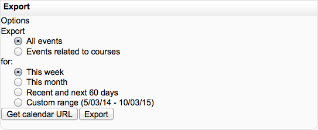

Click month on Calendar to get an expanded month view.
In Calendar view click the New Event button.
Set the event properties.
Click Save changes.
The different types of events can be visually filtered.
For example, if you (as a teacher) wanted to hide Group event dates (events assigned to learner Groups you create), click “Group events” on the bottom of the Calendar. This would hide all group events, and the color code would disappear from the link on the calendar. To show the events again, click the Group Events link again. This can make the calendar easier to read (especially if there are many events on the calendar).
Other features
- Adding closing dates to course activities — assignments, quizzes etc. will cause them to show up in the calendar block as course events.
- View previous or future months.
- Current date is outlined.
Moodle allows users to export calendars so they may be imported into other calendar programs, as a backup or to create a copy. The Moodle export process creates an ics file
There are two ways to create the ics file: creating an ics file for immediate downloading to a computer, or creating a url link that will create a defined calendar from a link without actually logging into the site.
At the bottom of a calendar page you will see the “Export calendar” and “iCal” links.
Click on the “iCal” link at the bottom of the Moodle calendar to show a “Opening icalexport.ics” popup window. Here you can save the file to your local computer or open it with MS Outlook.
Note: you cannot select individual items to include in the exported file with iCal, all events will be included.
Click on the “Export calendar” button at the bottom of a calendar will bring you to the Export page with options.
- Select “All events” or “Events related to courses”
- Select the time frame: “This week”, “This month”, “Recent and next 60 days” or a custom range. The range can be set from Administration > Site administration > Appearance > Calendar.
Now you have a choice to create an icalexport.ics file or to create a url that will create the icslexport.ics file via a link.
Click on the “Export” button will bring up a “Opening icalexport.ics” popup window. Either save the file or have MS Outlook open the file directly.
After pressing the “Export calendar” button at the bottom of the calendar page, select the events and time frames you wish. The “Get URL address” button will create a URL address. Copy and paste the url link into an email or any HTML page. This link will compile the icalexport.ics file. For example:
Mozilla Thunderbird/Lightning
- Enter into calendar mode by clicking the Calendar icon at the bottom-right of the client
- Click Calendar -> Import... then locate the exported iCal file
Note: changing an event in Thunderbird/Lightning will not change the event in a Moodle calendar as well, you must do that yourself.
Subscribing to a calendar in Outlook 2007
If you use an Outlook 2007 calendar, you can have your Moodle calendar events overlaid on top (or placed side by side) by following these steps:
- Go to the calendar view in your Moodle install and find the orange ical icon at the bottom and right click it, choosing “copy link location”. This link will permanently subscribe to the calendar events for the currently logged in user.
- Open Outlook 2007 and go to Tools > Account settings > Internet calendars > New.
- Paste in the address you copied from Moodle.
- Click OK and close.
- You should now see another calendar available on the left hand calendar bar, underneath ‘My Calendars’. Enable this and Outlook will update the calendar every time it opens.
- Right-click on the tabs to choose between ‘side by side mode’ and ‘overlay mode’.
Google calendar In Moodle, after pressing the “Export calendar” button at the bottom of the calendar page, select the events and time frames you wish. The “Get URL address” button will create a URL address.
In Google Calendar’s “Other calendars” menu, choose “Add by URL” and supply the URL generated in the process described above. This version of the Google calendar will update whenever changes are made in the source Moodle calendar (including new, changed or deleted events), although it may take several hours for the changes to appear.
Note that this may be more or less useful. The calendar will be relative to the Moodle user. That is, if the user who generates the URL is enrolled in several courses, it is this information that will appear in the calendar. There is no way (at this time) to generate a URL that only applies to one course.
One-time import (future updates in Moodle won’t appear)
In Moodle create an export file (icalexport.ics, as detailed above) and save it on your computer.
In Google Calendar, use the settings link (usually near the sign out and help links) and select the settings tab. This will bring up the “Import Calendar” pop up window. Select the file to import and the Google Calendar the file should be imported into. Note that this method doesn’t allow new (or modified) events from the Moodle calendar to appear in the Google calendar, unless you repeat this process. See the Dynamic Link method above.
See Calendar import for details of how to import external calendars (such as Google Calendar, or a calendar from another Moodle site) into Moodle’s calendar.